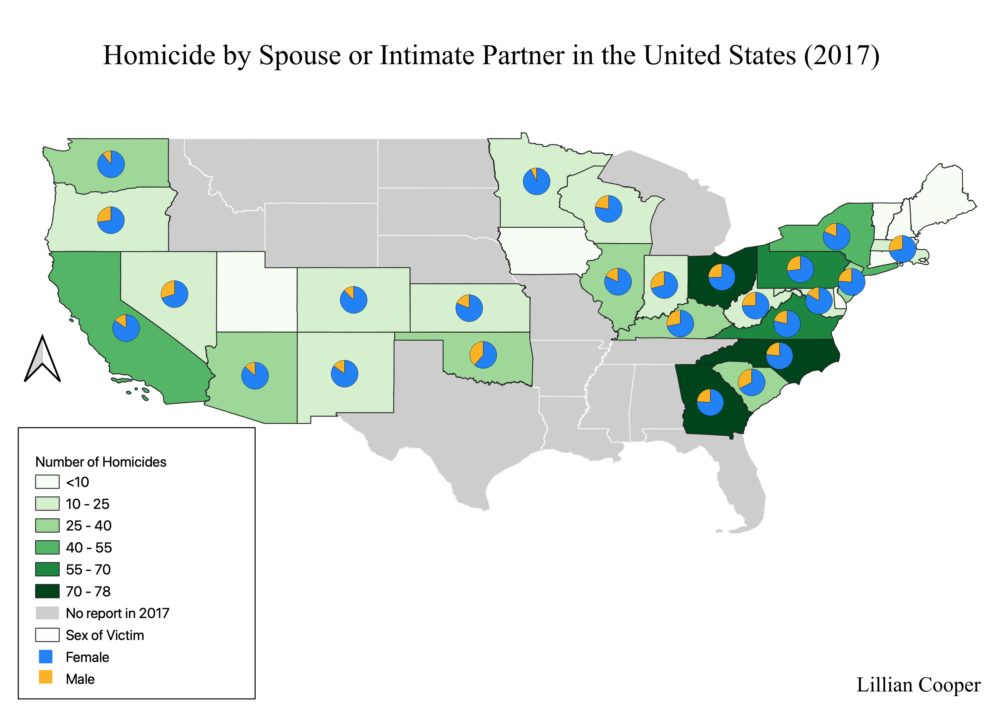

Homework 9: Choropleth and Proportional Data Map
Lillian Cooper
The following map contains a choropleth displaying state-by-state homicides by spouses and intimate partners in the United States in 2017, as well as the fraction of male and female victims. I chose to create this map to demonstrate that females are more frequently the victim of homicide by a spouse or intimate partner than males. All data was acquired from the National Violent Death Reporting System (NVDRS) portal on the Center for Disease Control (CDC) website.

Data used for this project
Link to agency website
Link to cleaned CSV dataset
Link to geoJSON